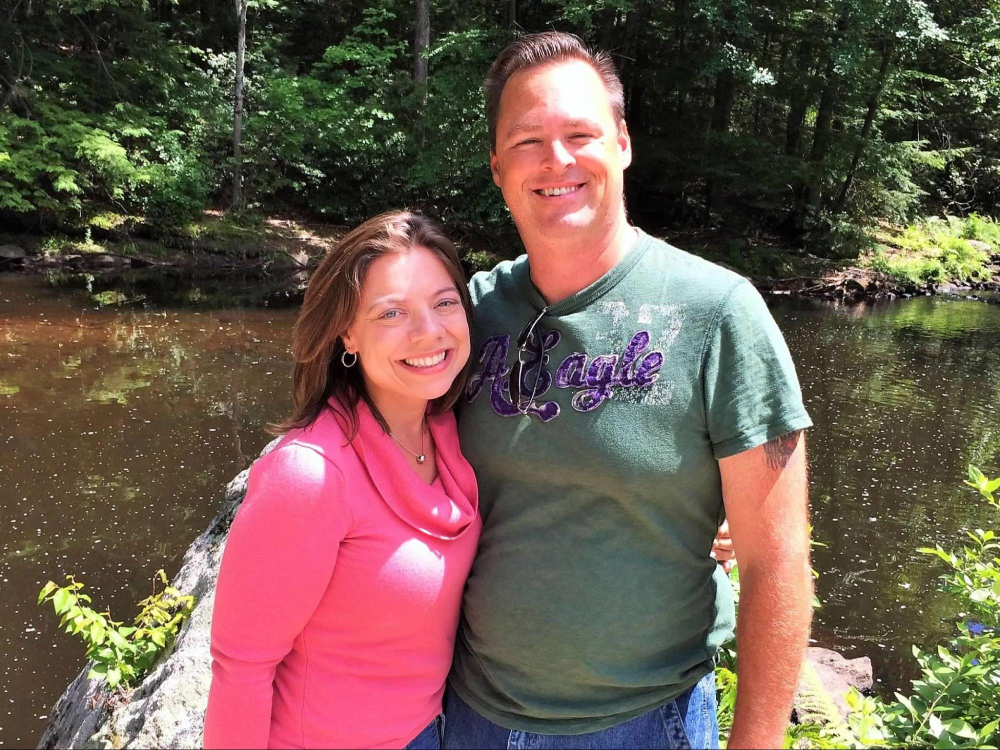
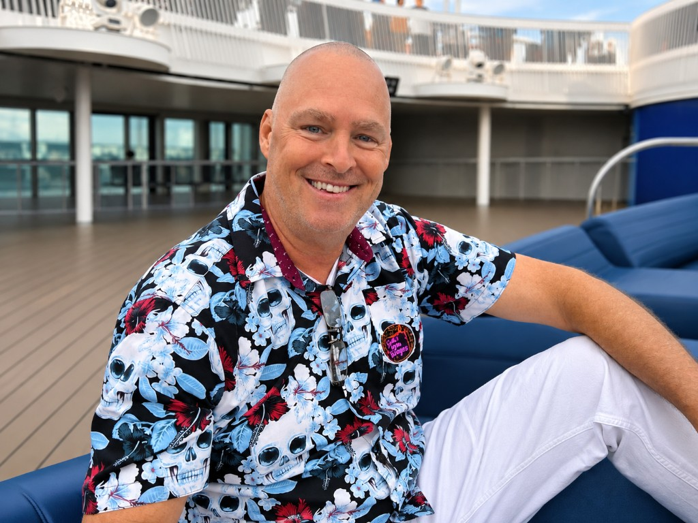
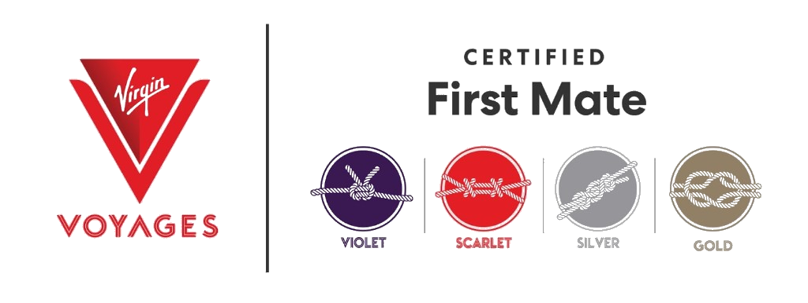
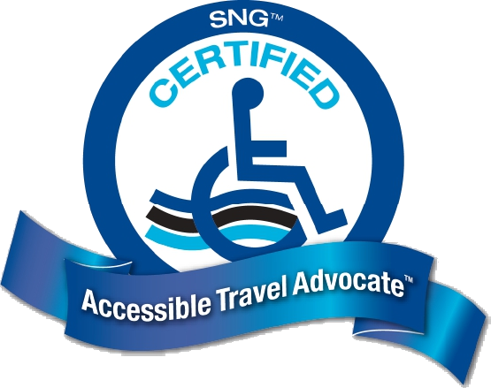

Travel Is Our Business. People Are Our Passion.
Meet Faith & Rob Ericksen — Orlando travel advisors who plan around your interests, your pace, and what you want from your time away.
Our Promise
Real Value
Value isn’t the cheapest price. It’s the right experiences, thoughtful inclusions, and no surprises. We help you spend where it matters most to you.
Custom and Easy
Every trip is built around your interests, your pace, and your budget. We handle the details, from cruises and hotels to transfers and tours, so planning feels simple instead of overwhelming.
Your Advocate
We’re with you before, during and after your trip. If plans change or something goes wrong, we work on your behalf with the cruise line, resort or supplier, so you’re never on your own.

Meet Faith and Rob
We’re Faith and Rob Ericksen, proud parents of four and grandparents to a grandson, and the owners of Explore Near and Far Travel in Celebration, Florida.
Together we’ve explored the world, from the cities and countryside of Europe to the markets of Istanbul, the streets of Casablanca and the beaches of Mexico. Each trip teaches us something new that we pass along to our clients. Honestly, the research is one of our favorite parts. We love digging into the right ship, the best neighborhood to stay in, or the small detail that makes a trip feel effortless.

About Faith
Every chapter of my career has been about understanding what matters to people and helping make it happen.
As a bed-and-breakfast owner, I learned how thoughtful hospitality and small details make people feel welcome. I hosted more than 300 weddings, which taught me to pull together countless moving pieces while keeping each celebration personal. Today I bring that experience to every stage of the celebration: bachelor and bachelorette getaways, destination weddings, and hotel room blocks and travel plans for guests, even when the wedding is in your own backyard. After the big day, I plan honeymoons, babymoons and anniversary trips that keep the celebration going.
As a CPA, I sharpened my attention to detail and my appreciation for real value. As a real estate agent, I helped people find their first homes and work through big decisions. For 13 years, I brought that same care to nursing, finishing my hospital career as a house supervisor. There I solved complicated problems, kept people working together, and stayed calm when plans changed.
All the while, travel was my passion. Eventually I knew it was time to follow my dream, so I chose to leave the hospital and dedicate myself fully to travel and to helping others experience it.
I never want anyone to think travel isn’t for them. Maybe you’re traveling solo, or you have mobility, medical or other challenges, or you’re simply unsure where to start. My nursing background and my certification as an accessible travel advocate help me plan around real needs. Together we’ll find the trip, the pace and the support that make it work for you.
About Rob
Rob is a lifelong sports fan with a special love for baseball. Wherever he and Faith travel, he looks for a chance to catch a game or take a stadium tour. He enjoys helping fellow fans do the same, whether that’s a spring training getaway, a ballpark road trip, a soccer match in Europe or a stadium tour on a cruise port day.
After serving in the U.S. Navy, Rob became a stay-at-home dad, running the household and keeping a busy family on schedule. As the kids grew up and moved out, Faith’s parents and Rob’s mother moved in, and life got even busier. Caring for several generations under one roof taught him patience, flexibility, and how to plan around everyone’s needs. Those skills make him a natural at planning family and multigenerational trips, where grandparents, parents and kids all need something different from the same vacation.

We’d love to get to know you and help you explore near and far.
Faith & Rob Ericksen
Explore Near and Far Travel, LLC
Our Travels. Your Inspiration.
From places we’ve personally explored to journeys we’ve thoughtfully planned for clients, discover a little of the experience behind Explore Near and Far Travel.
- Places we’ve personally explored
- Destinations we’ve planned for clients
- Both firsthand experience and client planning
Your next adventure doesn’t have to be on our map yet.
Certifications and cruise partners

